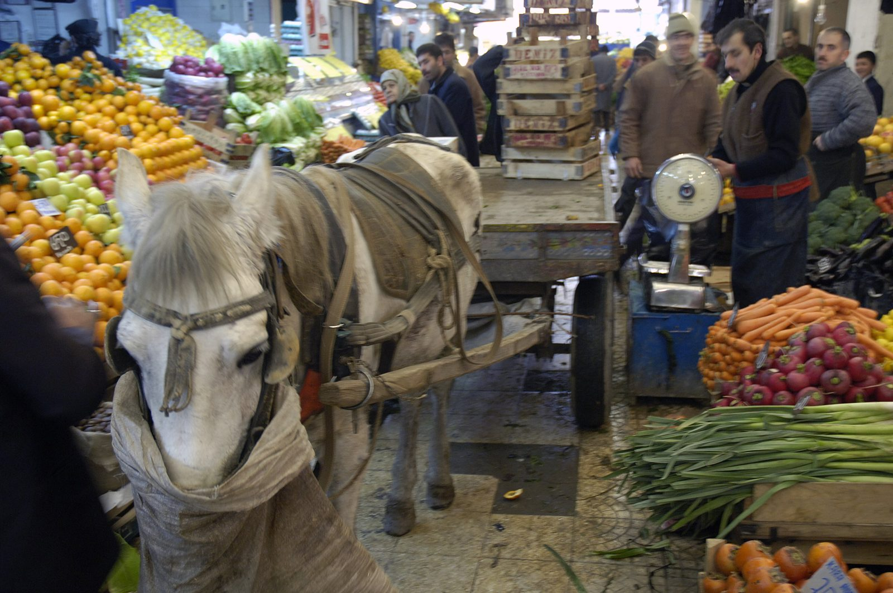
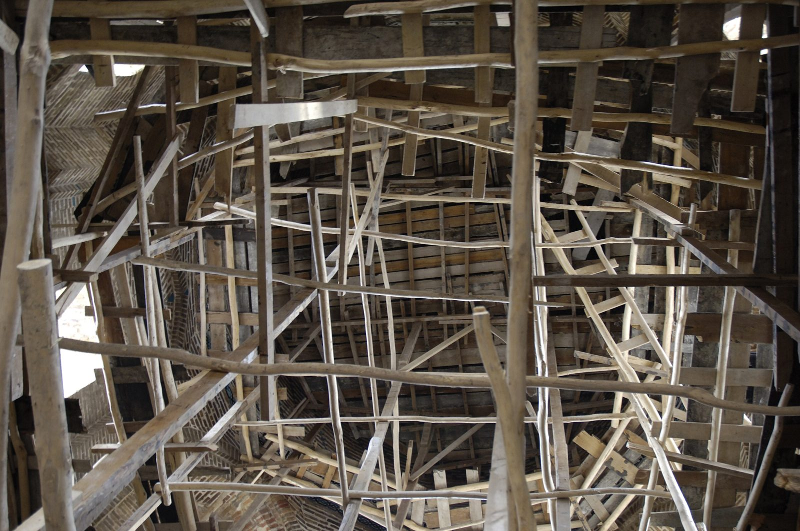
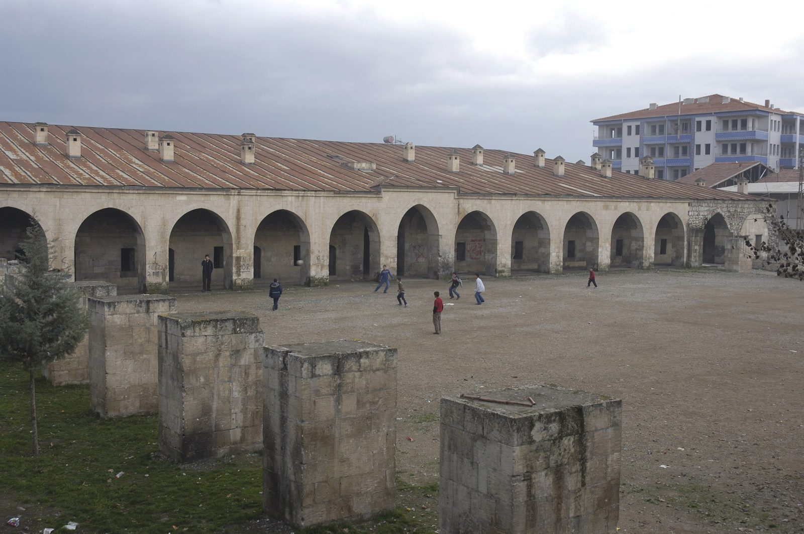

Kentin tarihini, yapılarını, ürünlerini ve insanlarını kaynaklı biçimde toplayan, doğrulayan ve herkese açan kent belleği platformu.
Neler olacakKatkıda bulunMalatya'da yerleşim Arslantepe'de başlar; sonraki çağlarda Hitit, Roma-Bizans, Selçuklu ve Osmanlı dönemlerinden geçer. 6 Şubat 2023 depremlerinde çarşı, sokaklar ve mahalleler ağır hasar gördü.
Hafıza Malatya, bu mekânların ve yaşamın hatırasını kaybolmadan derlemek için kurulan, bağımsız bir kent belleği çalışmasıdır. Yazılar, envanter, sözlü tarih, yayın ve etkinliklerle büyür.

Bunlar planlanan bölümlerdir; hazır oldukça burada açılacak.
Kentin tarihi, yapıları, ürünleri ve insanları üzerine kaynaklı yazılar. Etiketlerle taranabilir: Tarih, Çarşı, Ticaret, Kayısı, Mahalle.
Han, çarşı, cami, hamam ve evler; her biri için kısa künye, öncesi ve sonrası, kaynakçası.
Malatya hakkında yazılmış kitap, makale ve belgelerin aranabilir listesi.
Kent sakinleriyle izinli söyleşiler: çarşı esnafı, mahalle sakinleri, bağ ve bahçe ustaları.
Ajanda-kitap, anı kitabı ve gezici sergi. PDF olarak herkese açık.
Mahalle yazı atölyeleri, gençlerin sorduğu, yaşlıların anlattığı buluşmalar. Haber ve duyurular burada.

Eski bir fotoğraf, bir hatıra, bir han ya da çarşı hikâyesi, kaynak önerisi: hepsi hafızanın parçası. Bize yazın; hiçbir kayıt izniniz olmadan yayımlanmaz.
